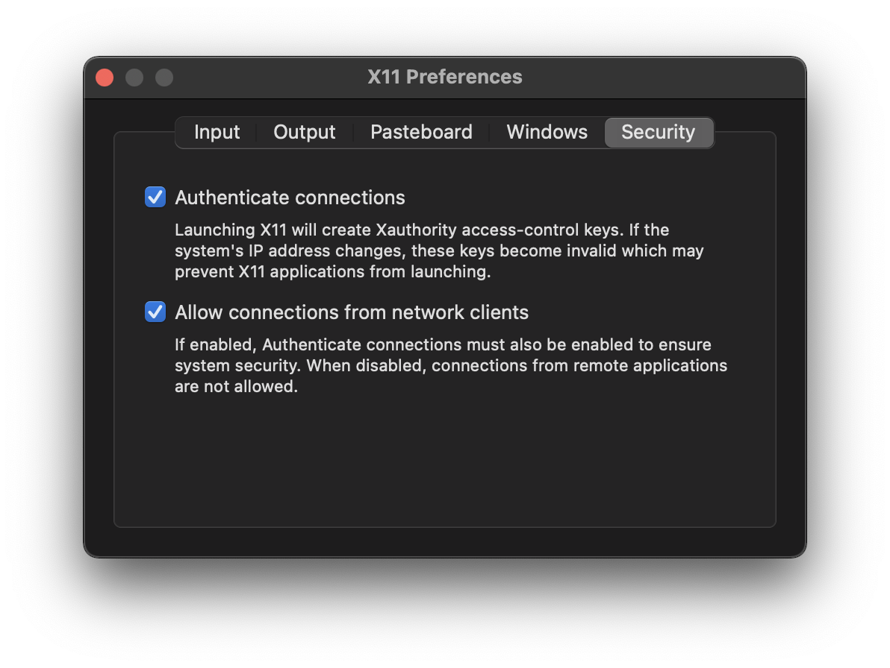
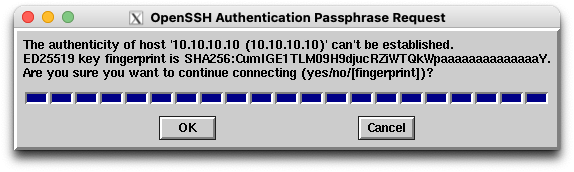
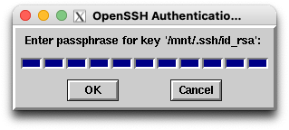
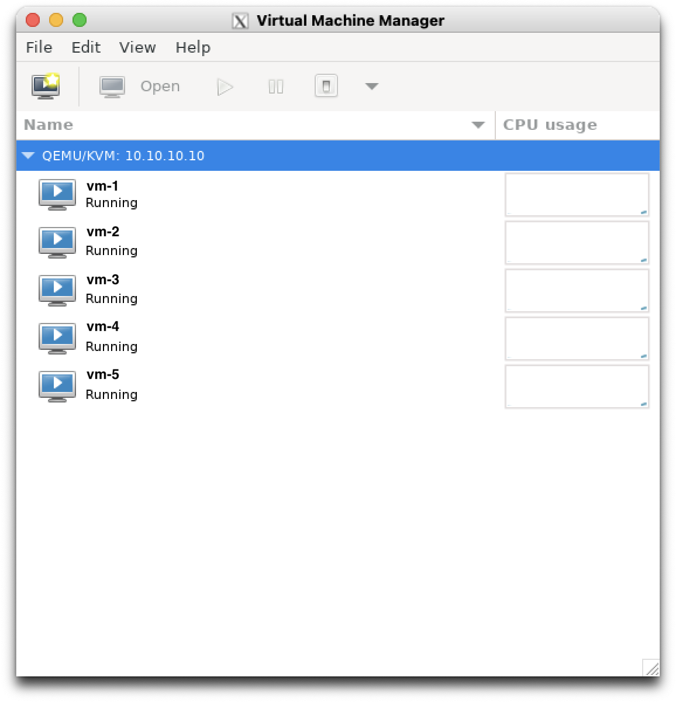

Programming, robotics, traveling
Всем привет, у меня возникла необходимость подключиться к KVM машине с целью отладки загрузки виртуальной машины. Для подключения через virsh console требуется, чтобы на виртуалке был запущен соответствующий клиент. Однако во-первых его там нет, а во-вторых операционная система еще не установлена (подробнее про virsh cyberciti.biz, ostechnix.com). Поэтому у меня возникла необходимость подключиться к KVM машине через virt-manager.
Я попытался установить virt-manager на macOS используя brew (jeffreywildman/homebrew-virt-manager). Но процесс завершился с ошибкой, и я не стал заниматься отладкой. Поэтому я решил попробовать запустить virt-manager (fabianlee.org) на Debian в Docker контейнере. Основная проблема в этой задаче – прокинуть иксы (графический (оконный) интерфейс) в хост систему.
Первое, что нужно сделать – собрать Docker образ с необходимым программным обеспечением. Для этого создаем Dockerfile:
FROM debian
ENV LC_ALL en_US.UTF-8
ENV LANG en_US.UTF-8
RUN apt-get update && apt-get install -y \
locales \
ssh ssh-askpass \
virt-manager \
--no-install-recommends
RUN echo "en_US.UTF-8 UTF-8" >> /etc/locale.gen \
&& locale-gen en_US.utf8 \
&& /usr/sbin/update-locale LANG=en_US.UTF-8
И далее собираем образ:
docker build . --tag app:local
После этого нам необходимо настроить хост систему для отображения оконного интерфейса. Для этого нужно:
Установить сервер X11 – XQuartz:
brew install Caskroom/cask/xquartz
Далее нужно запустить сервер:
open -a XQuartz
И включить поддержку входящих по сети соединений в настройках сервера – Allow connections from network clients.

Далее нужно задать переменную DISPLAY. Без этого у меня не получилось запустить xhost на моей машине.
export DISPLAY=<YOUR_IP>:0
<YOUR_IP>должен быть доступен из запускаемоего контейнера, и в идеале не светиться во внешней сети. Например это может быть адрес вашей машины в домашней Wi-Fi сети. На macOS в большинстве случаев можно посмотреть этот адрес следующим образом:
echo $(ipconfig getifaddr en0)
После чего с помощью утилиты xhost добавляем наш IP в список разрешенных для обслуживания сервером X11 адресов.
xhost + <YOUR_IP>
Подробнее про xhost в следующих источниках:
После этого все готово для запуска приложения:
Тут можно все команды объединить в одну, но я решил, что будет удобнее сначала зайти в Bash-оболочку контейнера и из неё уже запускать то, что нужно.
Запуск оболочки:
docker run -it --rm -e DISPLAY=<YOUR_IP>:0 -v ~:/mnt app:local /bin/bash
Обратите внимание на то, что я делаю mount в домашнюю директорию пользователя хост системы. Это нужно для использования секретного ключа внутри контейнера.
Далее нам необходимо запустить само приложение, в моём случае это установленный ранее virt-manager:
virt-manager -c 'qemu+ssh://<USER>@<KVM_IP>/system?keyfile=/mnt/.ssh/id_rsa'



На этом всё. Ниже вы можете ознакомиться с источниками, которые я брал в основу.
Источники: